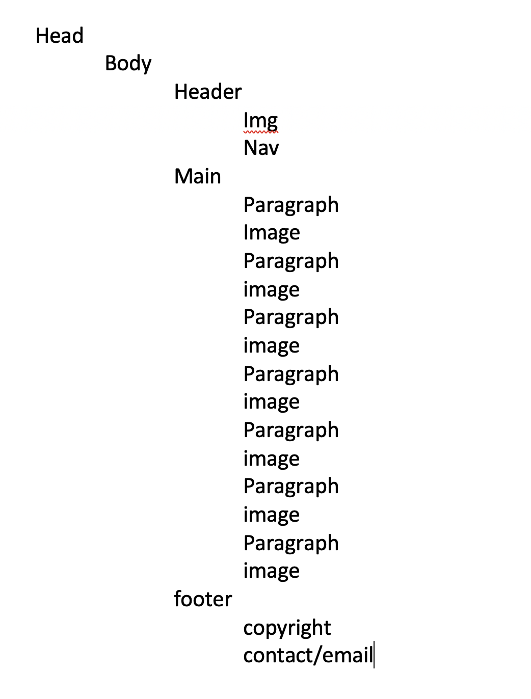
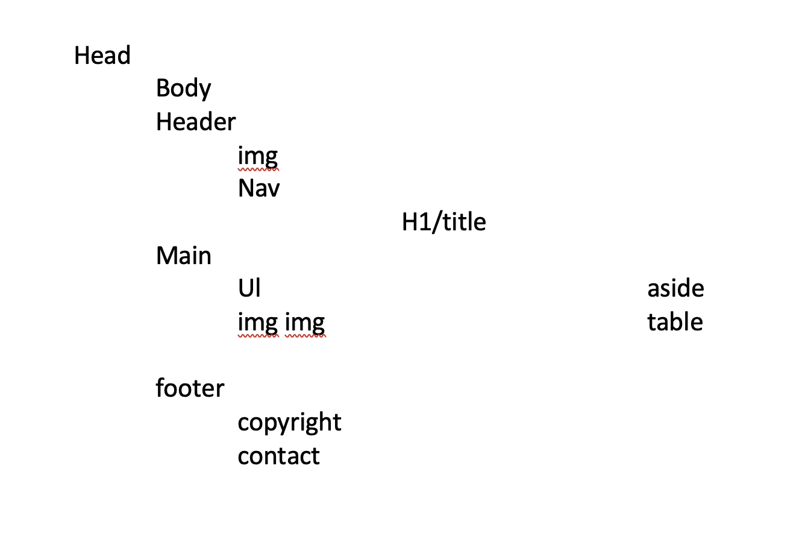
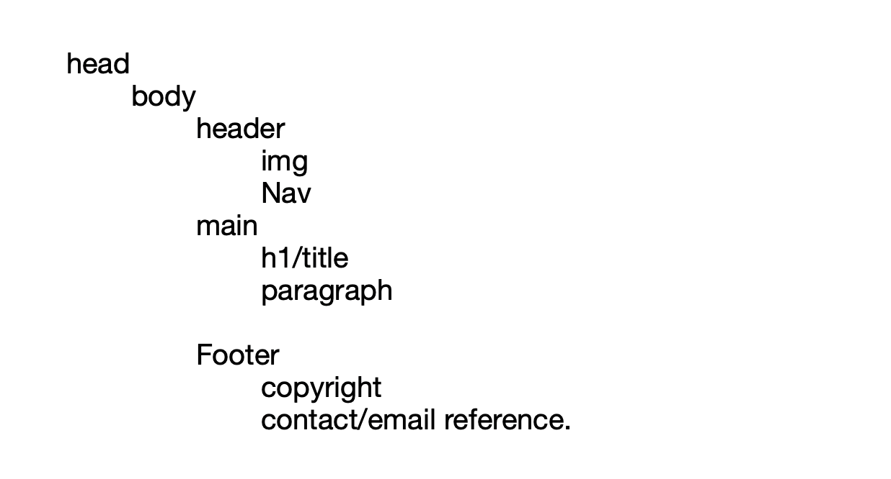
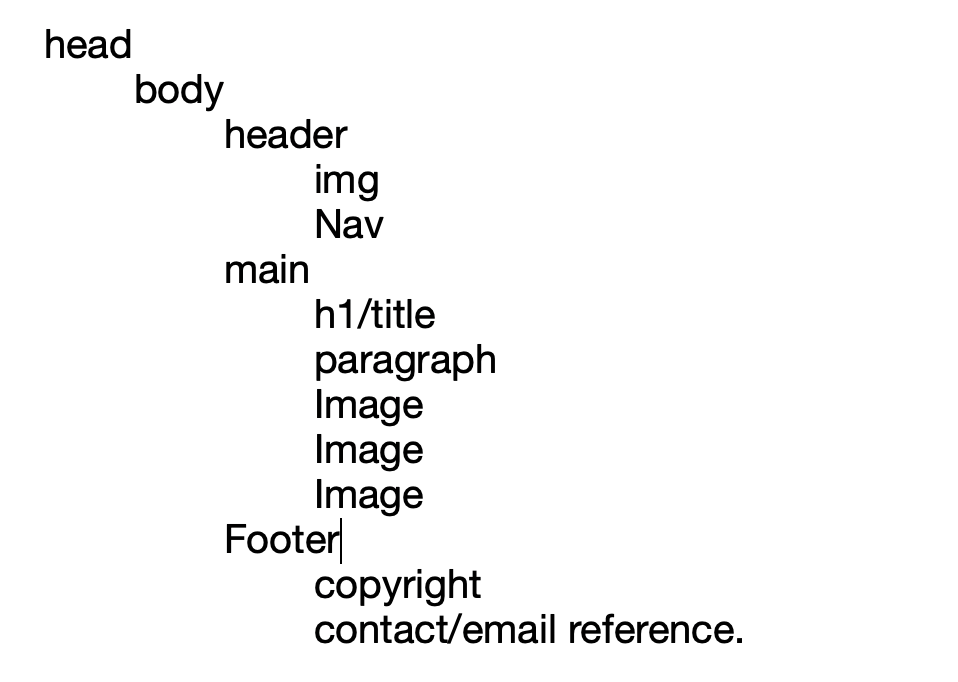
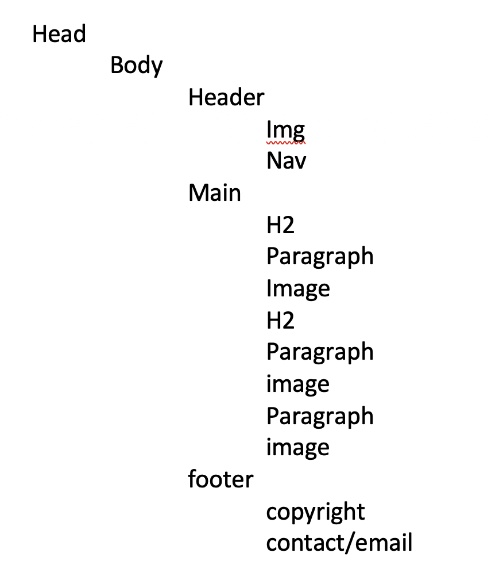

Page Explanation
I chose a turquoise background since it's one of my favourite colors. I chose the pink since it made a nice contrast with the turquoise and was a nice color. The colors in the navigator simply looked good. The black text was more readable on the page. I chose the image of my initials that I had made about a year ago since I really like it. I centered most of the tags since it looks better and makes it look more advanced. Having my own music was also really great.
Below is the wireframe for the About Me tab.

Below is the wireframe for the Explanation tab.
Below is the wireframe for the Passion tab.
Below is the wireframe for the School tab.
Below is the wireframe for the Music tab.

Below is the wireframe for the Explanation tab.
Below is the wireframe for the Webpage tab.
